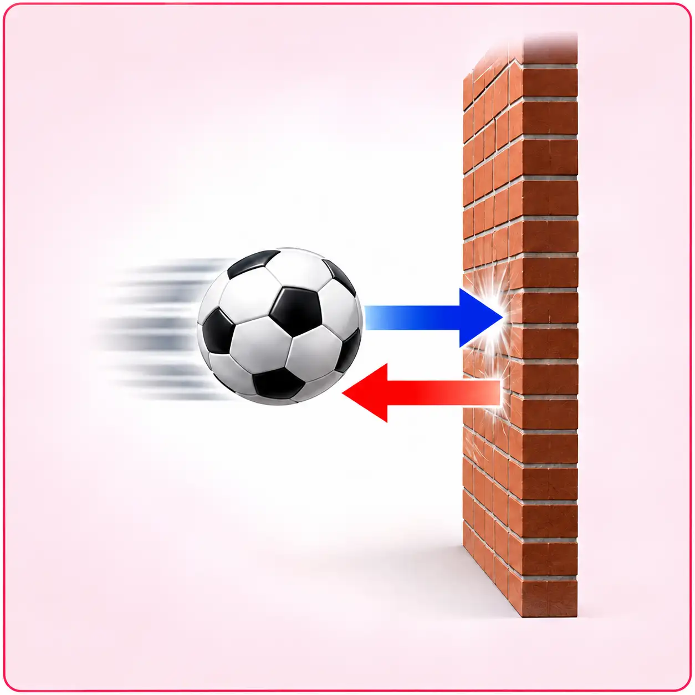
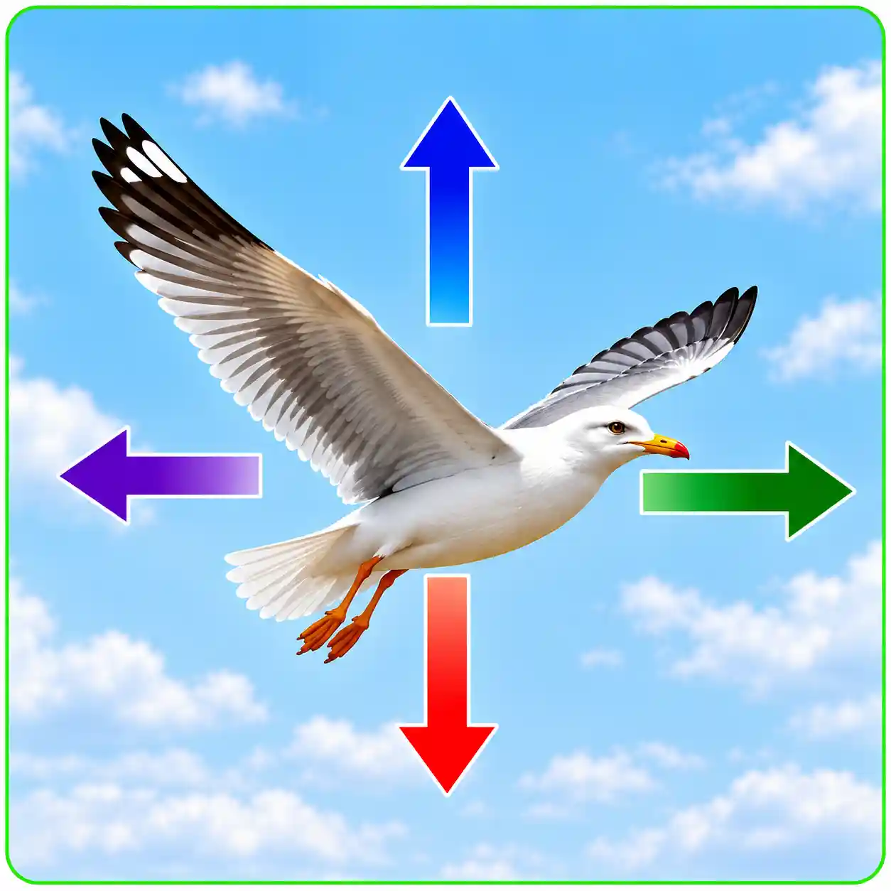
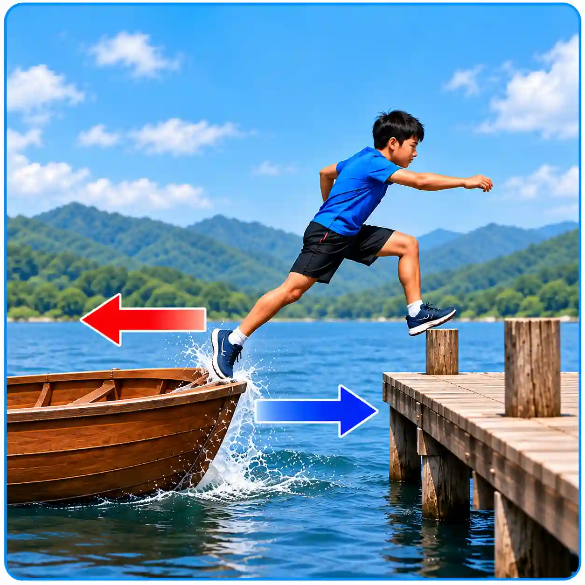

သက်ရောက်အားနှင့် တန်ပြန်သက်ရောက်အားများ
(Action and Reaction Forces)
သက်ရောက်မှုတိုင်းတွင် တန်ပြန်သက်ရောက်မှု ရှိသည်။ ပထမဝတ္ထုပေါ်သို့ ဒုတိယဝတ္ထုက အားသက်ရောက်ခဲ့လျှင် ပထမဝတ္ထုက ဒုတိယဝတ္ထုပေါ်သို့ တန်ပြန်သက်ရောက်အား ပြန်လည်သက်ရောက်သည်။ ယင်းသက်ရောက်အားနှင့် တန်ပြန်သက်ရောက်အားတို့သည် ပမာဏတူညီ၍ ဦးတည်ဘက် ဆန့်ကျင်နေကြပြီး ဝတ္ထုတစ်ခုချင်းစီပေါ်သို့ အပြန်အလှန် သက်ရောက်နေခြင်းကြောင့် ပျက်ပြယ်ခြင်း မရှိပါ။ ဝတ္ထုတစ်ခုတည်းသာ သီးခြားရှိခဲ့လျှင် သက်ရောက်အားနှင့် တန်ပြန်သက်ရောက်အားတို့မရှိနိုင်ပါ။

နံရံကို ဘောလုံးဖြင့် ပစ်ခြင်း
တွေ့ရှိချက် — ဘောလုံးသည် နံရံကို ထိမိသောအခါ ဘောလုံး၏ ရွေ့လျားမှု ပြောင်းလဲသွားပြီး ပြန်ကန်ထွက်လာနိုင်သည်။
ရှင်းလင်းချက် —
- ဘောလုံးက နံရံကို အားသက်ရောက်သည်။
- နံရံကလည်း ဘောလုံးကို ပမာဏတူညီပြီး ဆန့်ကျင်ဘက်ဦးတည်ချက်ရှိသော အား ပြန်သက်ရောက်သည်။
- ထိုအားကြောင့် ဘောလုံး၏ အမြန်နှုန်းနှင့် ဦးတည်ချက် ပြောင်းလဲနိုင်သည်။

လေထဲတွင် ပျံနေသော ငှက်
တွေ့ရှိချက် — ငှက်သည် လေထဲတွင် ရှေ့သို့ ရွေ့လျားနိုင်ပြီး မြင့်တက်နိုင်သည်။
ရှင်းလင်းချက် —
- အလေးချိန် (Weight) — ကမ္ဘာ့ဆွဲအားကြောင့် ငှက်ကို အောက်ဘက်သို့ သက်ရောက်သည်။
- ပင့်တင်အား (Lift) — တောင်ပံများနှင့် လေစီးဆင်းမှုတို့ကြောင့် ငှက်ကို အပေါ်ဘက်သို့ ပင့်တင်ပေးသည်။
- တွန်းကန်အား (Thrust) — ငှက်၏ တောင်ပံလှုပ်ရှားမှုကြောင့် လေကို နောက်ဘက်သို့ တွန်းပြီး ငှက်ကို ရှေ့သို့ ရွေ့လျားစေသည်။
- လေခုခံအား (Drag) — ငှက်၏ ရွေ့လျားမှုကို ဆန့်ကျင်သည်။

လူတစ်ယောက်သည် လှေပေါ်မှ ကမ်းပေါ်သို့ ခုန်တက်ခြင်း
တွေ့ရှိချက် — လူသည် ကမ်းဘက်သို့ ခုန်သွားချိန်တွင် လှေသည် ဆန့်ကျင်ဘက်ဖြစ်သော ရေဘက်သို့ နောက်ဆုတ်ရွေ့လျားသွားနိုင်သည်။
ရှင်းလင်းချက် —
- လူက ခုန်တက်ရန် လှေကို နောက်ဘက်သို့ တွန်းအားသက်ရောက်သည်။
- လှေကလည်း လူကို ရှေ့ဘက်သို့ တန်ပြန်သက်ရောက်အား ပေးသည်။
- ထို့ကြောင့် လူသည် ကမ်းဘက်သို့ ရွေ့လျားပြီး လှေသည် ဆန့်ကျင်ဘက်သို့ ရွေ့လျားသွားနိုင်သည်။
အဓိကအချက်
ဝတ္ထုတစ်ခုတည်းသာ သီးခြားရှိခဲ့လျှင် သက်ရောက်အားနှင့် တန်ပြန်သက်ရောက်အားတို့မရှိနိုင်ပါ။